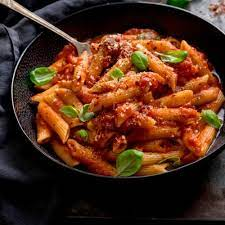

Bring a large pot of water to a rolling boil over high heat. Cook pasta in boiling water until cooked through but still firm to the bite, about 10 minutes. Drain and set aside.
Heat both oils in a large skillet over medium-high heat. Add garlic and cook until soft, 1 to 2 minutes. Add tomatoes, reduce heat to medium, and simmer for 10 minutes. Stir in pepper Jack, mozzarella, and Parmesan cheese. When cheese begins to melt, mix in cooked penne pasta. Season with fresh basil.